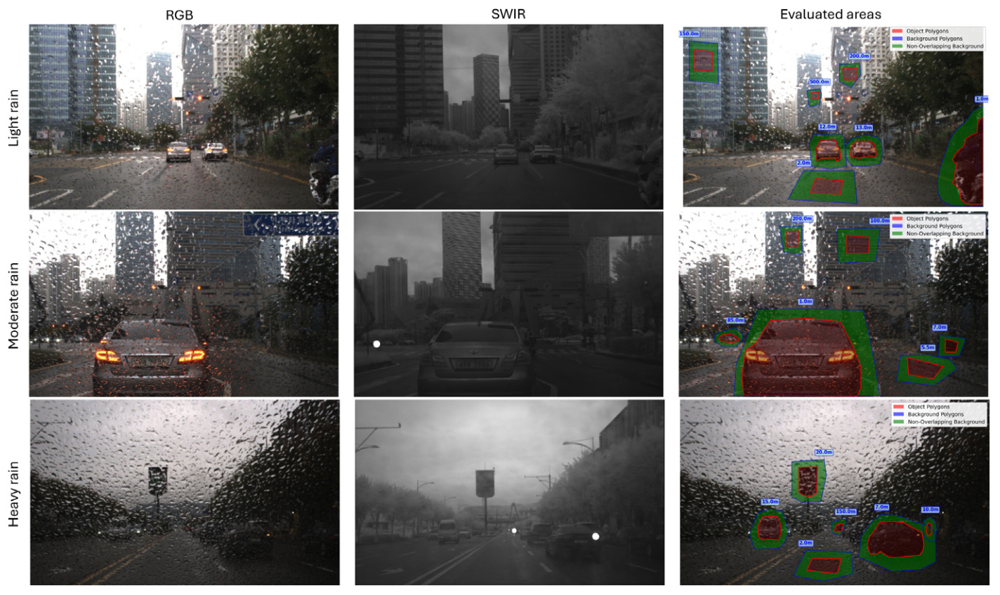
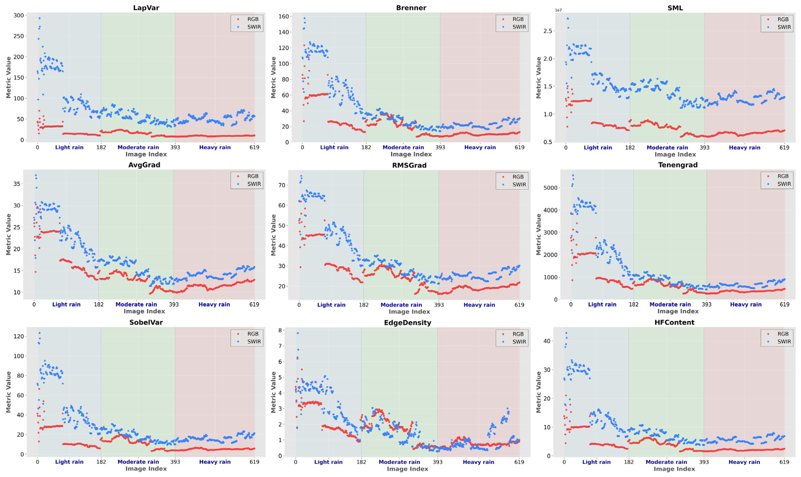
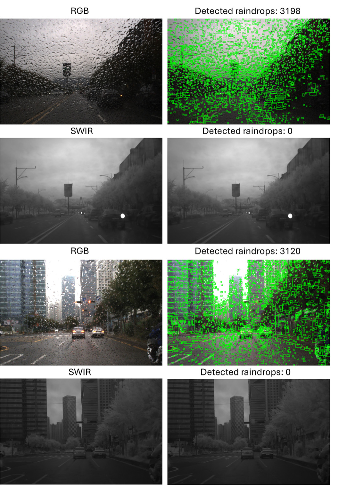
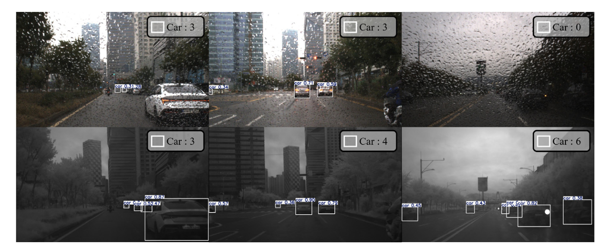
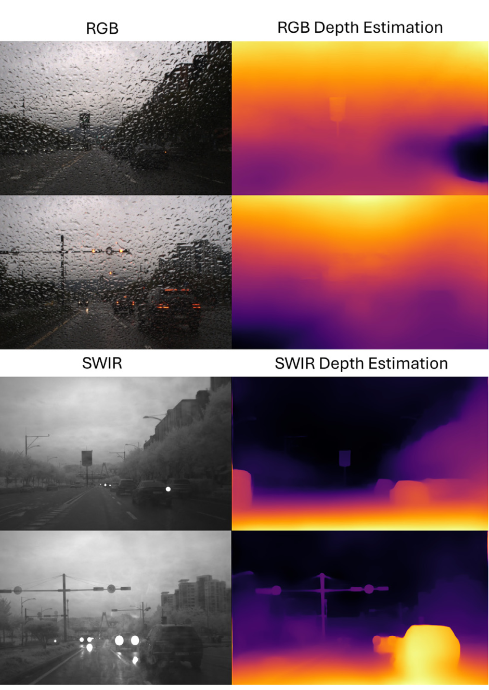

Abstract
Reliable visual perception under adverse weather remains a critical challenge for autonomous systems. Rain, in particular, degrades RGB camera performance due to Mie scattering and windshield distortions. In this study, we conduct a measurement-driven analysis comparing Short-Wave Infrared (SWIR) and RGB imaging under real-world rainy conditions. Using synchronized, unprocessed RGB-SWIR image pairs and 14 no-reference image quality metrics, we quantify clarity, contrast, and effective visibility. Results show SWIR provides a 29% increase in scene visibility and significantly enhances performance in object detection, segmentation, and depth estimation tasks. These measurements indicate that SWIR provides sensor-level mitigation of rain-induced degradations, improving perceptual quality and visibility under adverse conditions.
Measurement Method
This is an empirical sensor-comparison study, not a new deraining network. It evaluates synchronized RGB–SWIR pairs captured behind a vehicle windshield during real rain. The analysis includes geometric registration, resampling, and a common field-of-view crop; no image-restoration or deraining algorithm is applied.
The collection contains 620 paired daytime frames. The SWIR sensor is a Crevis HG-A130SW with a 1000–1700 nm filter; the visible sensor is a FLIR Grasshopper3. The paper evaluates image quality, estimates visibility from contrast-versus-distance regressions, and measures downstream perception using fixed pretrained models.
Downstream tests use YOLOv8 for detection, DeepLabv3 for segmentation, and MiDaS for monocular depth. RGB inputs are converted to grayscale for these comparisons, and the models are used without fine-tuning.
Visibility Assessment
Scene visibility is estimated with the Koschmieder model, V = 3.912 / β̂, using accepted log-contrast-versus-distance regressions across five contrast definitions. The rain-intensity categories are based on visible windshield occlusion and distortion, rather than instrument-measured rainfall rates.

| Imaging modality | Light rain | Moderate rain | Heavy rain |
|---|---|---|---|
| RGB | 1479.6 m | 353.0 m | 308.1 m |
| SWIR | 4869.5 m | 537.7 m | 454.3 m |
Image Quality
The paper reports 14 measures of image clarity and quality. The table below reproduces the reported mean values; the publication also provides standard deviations and effect sizes. The arrow indicates the preferred direction where the source specifies one.
| Metric | RGB mean | SWIR mean |
|---|---|---|
| Mean intensity | 75.20 | 76.61 |
| HFContent ↑ | 3.957 | 10.197 |
| Laplacian variance ↑ | 15.20 | 74.57 |
| Brenner ↑ | 21.77 | 41.90 |
| SML ↑ | 7.78 × 10⁶ | 1.46 × 10⁷ |
| Average gradient ↑ | 14.02 | 17.55 |
| RMS gradient ↑ | 25.35 | 34.19 |
| Tenengrad ↑ | 719.7 | 1356.5 |
| Sobel variance ↑ | 10.84 | 28.76 |
| Edge density ↑ | 1.505 | 1.799 |
| BRISQUE ↓ | 2.659 | 2.635 |
| NIQE ↓ | 26.59 | 25.27 |
| MANIQA ↑ | 39.85 | 43.07 |
| CLIPIQA ↑ | 50.07 | 50.07 |
CLIPIQA has the same rounded mean for both modalities in Table 3. The paper notes that image-quality measures designed for RGB data may not fully characterize SWIR imagery.
View per-frame sharpness and contrast plots

View the published raindrop-detection examples

Downstream Perception
The following values are reproduced from the paper’s downstream-task comparison. The depth metrics retain the source’s reported scale; no unreported unit or calibration is added.
| Task / metric | RGB | SWIR |
|---|---|---|
| Segmentation · mIoU ↑ | 0.8525 | 0.8959 |
| Segmentation · pixel accuracy ↑ | 0.9505 | 0.9706 |
| Depth · MAE ↓ | 13.9651 | 8.8677 |
| Depth · RMSE ↓ | 15.8352 | 12.3727 |
| Depth · SSIM ↑ | 0.0221 | 0.0302 |
| Detection · detected objects ↑ | 17 | 33 |
| Detection · recall ↑ | 0.1810 | 0.3431 |
| Detection · F1 ↑ | 0.2937 | 0.4192 |
| Detection · AR@10 ↑ | 0.1791 | 0.3038 |

View the published depth-estimation examples

Scope and limitations
The evaluation focuses on sensors mounted behind a windshield and on the collected daytime data. The paper identifies direct rainfall exposure on external camera optics, low-light operation, and the absence of RGB-like color cues as important limitations or directions for further study. The findings should not be read as a validation of unrestricted all-weather operation.
BibTeX
@article{yeo2026seeing,
title = {{Seeing through the rain: An empirical assessment of short-wave infrared imaging on enhancing autonomous vehicle perception under rainy weather}},
author = {Yeo, Sanghyeop and Nalcakan, Yagiz and Jin, Youngwan and Park, Incheol and Ju, Hyeongjin and Kim, Shiho},
journal = {Measurement},
volume = {259},
pages = {119654},
year = {2026},
doi = {10.1016/j.measurement.2025.119654},
url = {https://doi.org/10.1016/j.measurement.2025.119654}
}
Original publication
Sanghyeop Yeo, Yagiz Nalcakan, Youngwan Jin, Incheol Park, Hyeongjin Ju, Shiho Kim. Seeing through the rain: An empirical assessment of short-wave infrared imaging on enhancing autonomous vehicle perception under rainy weather.
Measurement, 2026. Volume 259 · Article 119654 · Available online 12 November 2025.
DOI: 10.1016/j.measurement.2025.119654